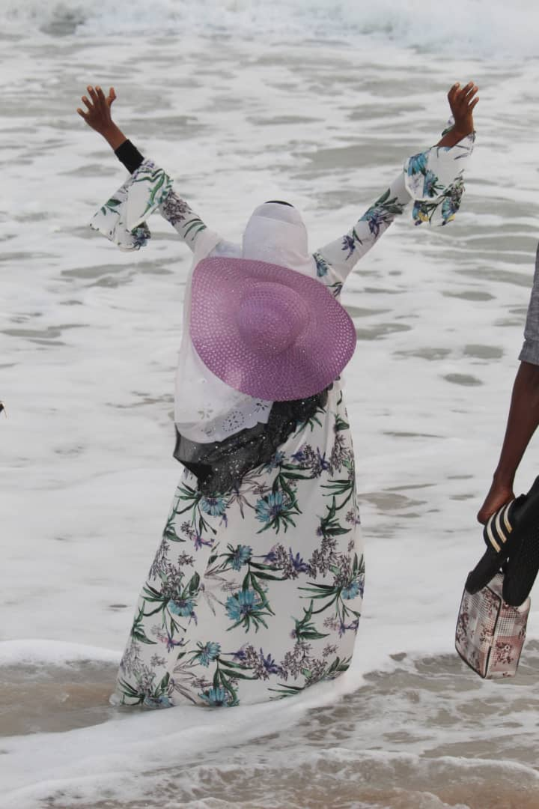
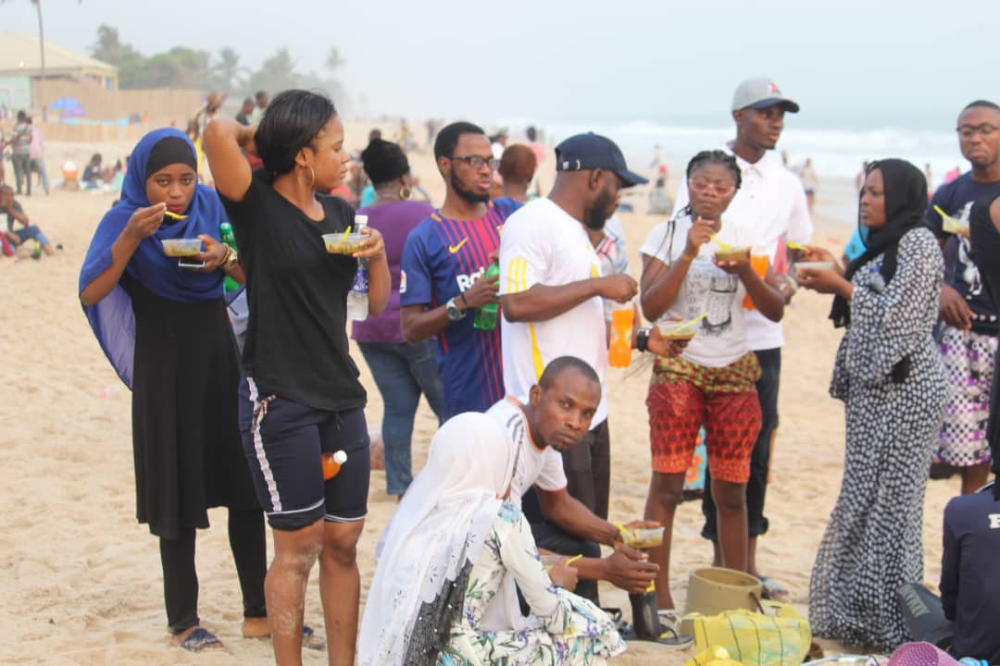

Lagos is a vibrant city and expants first arriving will most likely have their senses overwhelmed by the chaos,noise
and traffic.The lifestyle in Lagos is fast-paced and,as the fastest growing city in Africa,hustle and bustle abound.
Despite the chaos and proverty,expats cant deny that Nigerians are a friendly people,and Lagosians are no exceptions.
LAGOS LIFESTYLE
Fashion
Lagos Fashion
Lagos fashion week is a fashion platform the Nigerian ans ultimately the African fashion industry;by bringing
together buyers,consumers and the media to view the current collections of designer at a four dayevent in
the fashion capital of lagos,NIgeria.As a leading fashion event on the African fashion calendar,LagosFW leads
the way with inintiatives.

LAGOS FASHION
Health
Covid'19
Stay home as much as you can
Keep a safe distance
Wash hands often
Cover your cough
SICK?Call ahead
HEALTH
Relationship
Love,friendship,Family
love is strong attachment for another arising out of kinship or personal ties
frienship is a relationship of mutual affection between two people.
It is astronger form of interpersonal bond than an association,and,
has been studied.
family is a specific group of people that may be made up of patners,
children,parents,uncles,cousins and grandparents.

LOVE,FRIENDSHIP,FAMILY
Religion
Islam,Christainity
Islam is an abrahamic monotheistic religion teaching that there is only one God,and that
Muhamed is a messenger of God,It is a religion of Peace an there way of believe is the Quran
Christainity is an abrahamic monothestic religion based on the life and teachings of Jesus of Nazareth
its adherents as christians believe that Jesus is the Christ whose coming as the messiah was prophesised
in the Hebrew Bible